A new crew system written from scratch (GPL-3.0). People that look and move like people, and life support that is physics, not a timer. The first crew member is Niza Krit, astronavigator of the 37th Star Expedition.
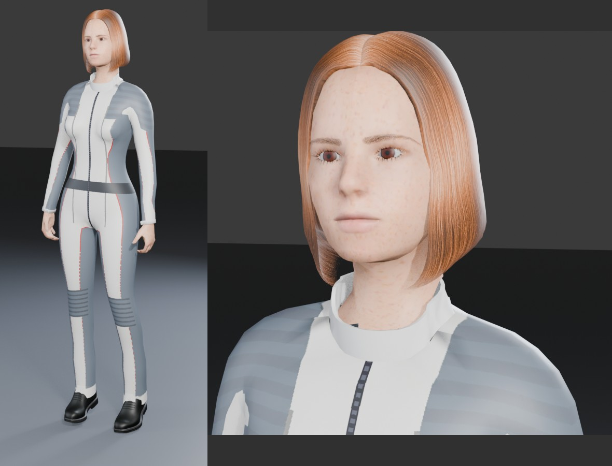
Look
Realistic human figure (MakeHuman / MPFB, CC0 assets), skinned mesh with a 31-bone skeleton, deformed every frame.
Two outfits: shipboard coverall for breathable air, and the «Frame» space suit with a powered exoskeleton. K puts the suit on or takes it off, only where the air is breathable.
Coverall with sewn panels, piping, zip and a normal map; stand collar; relaxed hands.
Animation
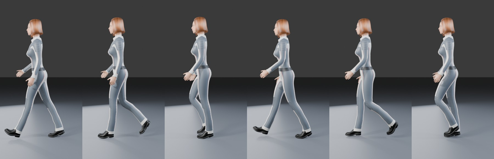
Walk, one cycle, rendered from the files the game loads
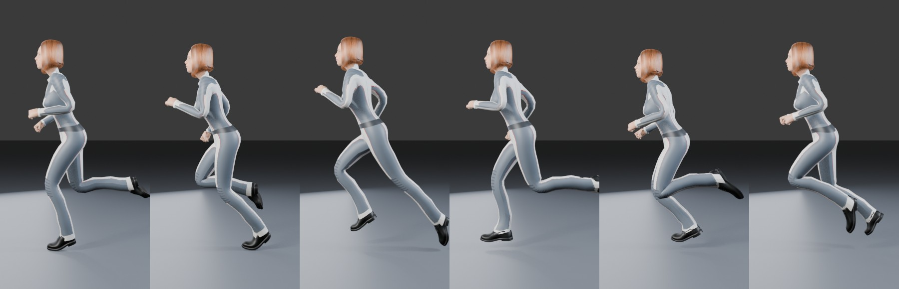
Run, one cycle
Motion-capture walk and run retargeted onto the figure: straight standing knee, natural pelvis, no foot skating.
Walk without Shift, run with it. Never a half-walk, half-run mix. Stride grows with speed.
Fast, friction-limited stop; S while running brakes hard. Lean into acceleration and braking, bank into turns.
Fists when running, relaxed hands when walking. Blinking every 2–6 s. Hair on springs: it sways with steps, stops and turns.
Breathing animation driven by the physiology: deeper and faster with effort and fatigue.
Jump on Space: ballistic flight in Orbiter's physics, crouch on landing.
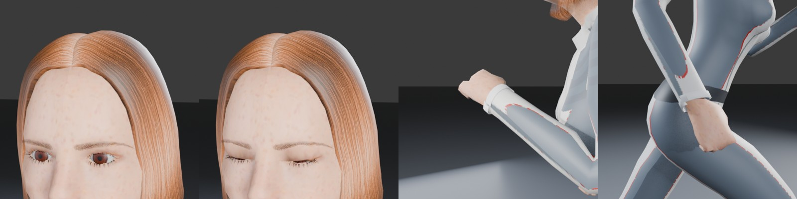
Blink, relaxed hand on the walk, fist on the run
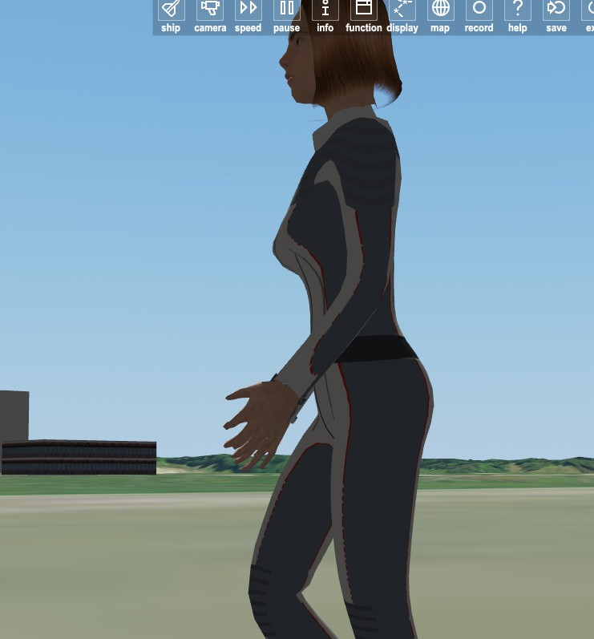
In game, KSC runway
Life support
Atmosphere composition per planet (O₂ / CO₂), not just pressure: no taking the helmet off on Mars.
Metabolic power from activity drives O₂ use, CO₂ output, pulse and breathing rate.
Stamina (anaerobic reserve) limits the running speed. Hypoxia, CO₂ narcosis and vacuum exposure lead to unconsciousness and death.
Suit: one battery for everything (O₂ regulation, CO₂ sorbent, fans, heating and cooling, drives, lamps). Thermal control rated −157…+121 °C, with sun, shade and hot ground taken into account.
Space suit and jet pack
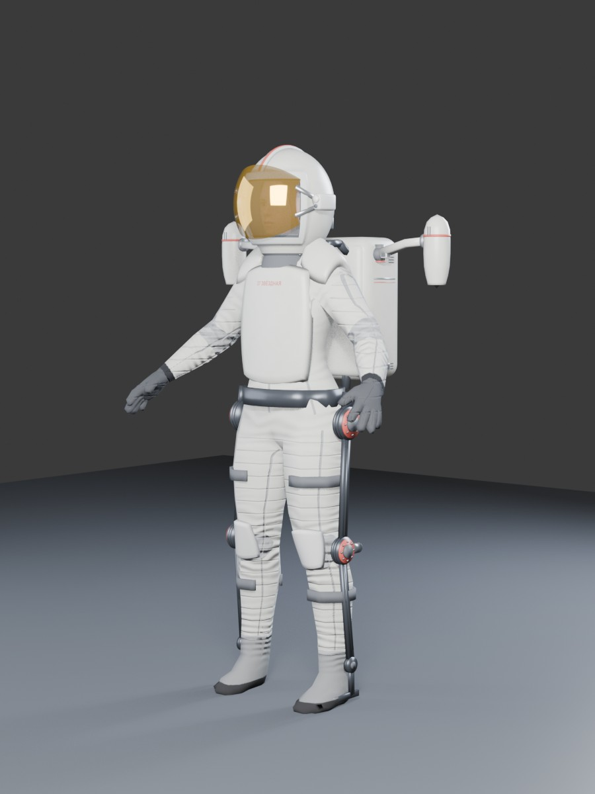
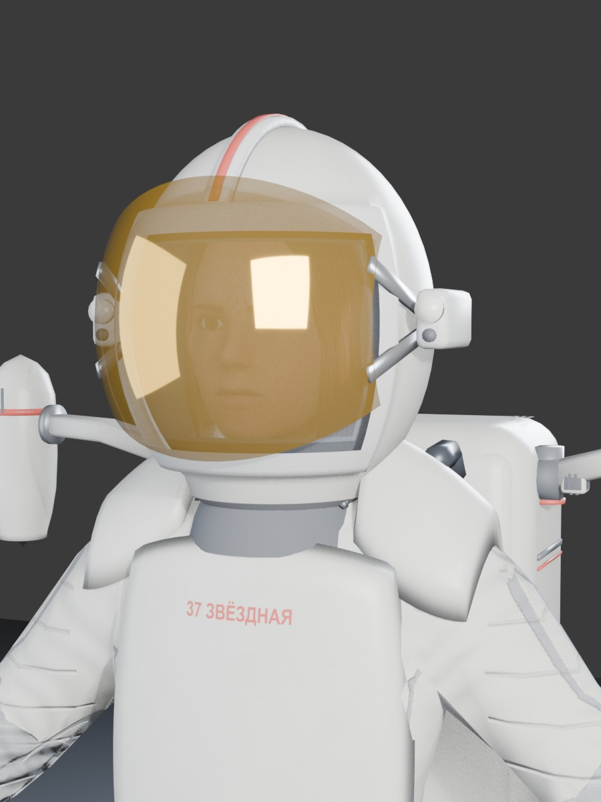
Exoskeleton servo boost on Shift: longer, faster stride at the battery's cost. With a flat battery the drives are dead weight.
Helmet: gold sun visor V, two lamps L.
Nitrogen RCS in the suit for zero-g work; weightless body posture, limbs lag behind the thrust.
Jet pack (B take or drop, a separate object): two pods on folding booms with thrust vectoring, ~280 m/s Δv, 2 × 500 N. Flies on the Moon, Mars and in space; on Earth the thrust is less than the weight.
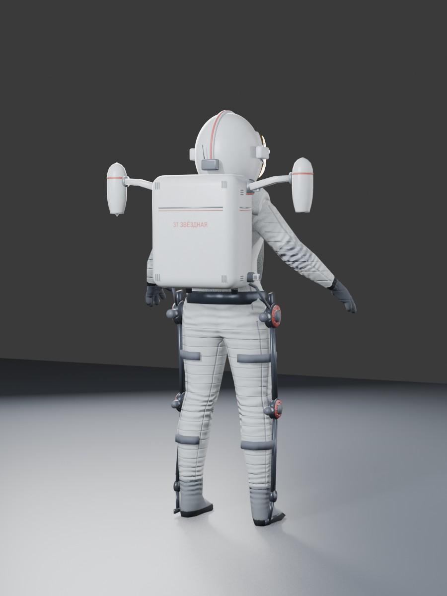
Booms open
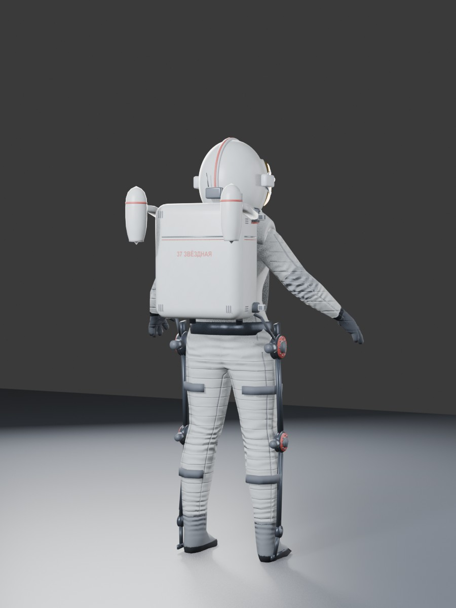
Booms folded
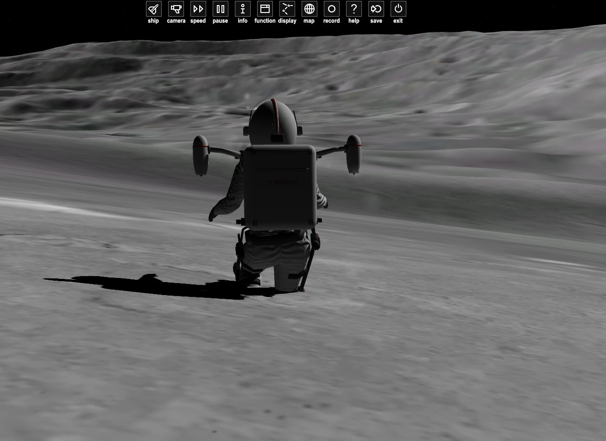
In game, on the Moon
Suit computer
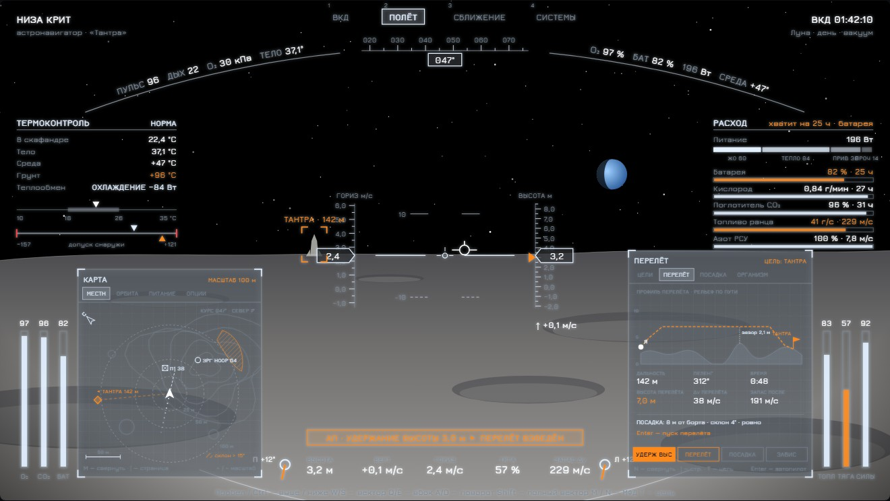
Layout mock-up; in the game the display is drawn by the module
Holographic helmet display: vitals and resources along the visor rim, thermal control, consumption.
Autopilots: near the ground — altitude hold, hover, hop to target, landing; in space — sync, hold, approach, dock.
Night vision (on-screen button).
Sound
With XRSound (optional): footsteps on the gait's foot contacts, heavy suit steps, muffled steps in vacuum, breathing paced by the physiology, the suit fan following the thermal load.
Controls on the ground
W/S move (S brakes) · A/D turn · Q/E side step · Shift run / servo boost · Space jump · K suit · V visor · L lamps · B jet pack
Alpha status
Requires Orbiter 2016 and D3D9Client; XRSound for sound (optional).
Not yet: vessel integration (airlocks, boarding, crew transfer). That is the next milestone.
Jet pack landing is being debugged: the figure may sink into the ground after touchdown.
Figure — MakeHuman / MPFB (CC0). Motion capture — CMU Graphics Lab Motion Capture Database. Sounds — Kenney, OwlishMedia (CC0). HUD font — Jura (OFL). Prior art and inspiration: UMmu (Dan Steph) and UACS (Abdullah Radwan); OrbiterCrew contains none of their code.
Живой экипаж для Orbiter 2016 альфа
Новая система экипажа, написанная с нуля (GPL-3.0). Люди, которые выглядят и двигаются как люди, и жизнеобеспечение как физическая модель, а не таймер. Первый член экипажа — Низа Крит, астронавигатор 37-й Звёздной экспедиции.
Вид
Реалистичная фигура человека (MakeHuman / MPFB, ассеты CC0), меш со скелетом из 31 кости, деформируется каждый кадр.
Две формы одежды: бортовой комбинезон для пригодного воздуха и скафандр «Каркас» с силовым экзоскелетом. K — надеть или снять; снять можно только там, где можно дышать.
Комбинезон с панелями, кантом, молнией и картой нормалей; воротник-стойка; расслабленные кисти.
Анимация
Шаг, один цикл, отрисован из файлов, которые загружает играБег, один цикл
Шаг и бег из записей motion capture, перенесённые на фигуру: прямое опорное колено, естественный таз, без скольжения стоп.
Без Shift — шаг, с ним — бег. Никакой смеси «полушаг-полубег». Длина шага растёт со скоростью.
Быстрая остановка с учётом сцепления; S на бегу — резкое торможение. Наклон при разгоне и торможении, крен в поворотах.
На бегу кулаки, на шаге расслабленные кисти. Моргание раз в 2–6 с. Волосы на пружинах: качаются от шагов, остановок и поворотов.
Дыхание анимируется по физиологии: глубже и чаще от нагрузки и усталости.
Прыжок на Пробел: баллистический полёт в физике Orbiter, приседание при приземлении.
Моргание, расслабленная кисть на шаге, кулак на бегуВ игре, ВПП KSC
Жизнеобеспечение
Состав атмосферы по планетам (O₂ / CO₂), а не только давление: на Марсе шлем не снять.
Метаболическая мощность от нагрузки задаёт расход O₂, выдох CO₂, пульс и частоту дыхания.
Выносливость (анаэробный запас) ограничивает скорость бега. Гипоксия, отравление CO₂ и вакуум ведут к потере сознания и гибели.
Скафандр: одна батарея на всё (подача O₂, поглотитель CO₂, вентиляторы, обогрев и охлаждение, приводы, фонари). Терморегуляция −157…+121 °C с учётом солнца, тени и раскалённого грунта.
Скафандр и реактивный ранец
Сервоусиление экзоскелета на Shift: длиннее и быстрее шаг за счёт батареи. Без заряда приводы — мёртвый груз.
Шлем: золотой солнцезащитный щиток V, два фонаря L.
Азотная РСУ скафандра для работы в невесомости; поза невесомости, конечности с инерцией.
Реактивный ранец (B — взять или сбросить, отдельный объект): две гондолы на складных балках с управлением вектором тяги, ~280 м/с Δv, 2 × 500 Н. Летает на Луне, Марсе и в космосе; на Земле тяга меньше веса.
Балки раскрытыБалки сложены
В игре, на Луне
Компьютер скафандра
Макет компоновки; в игре экран рисует модуль
Голографический шлемовый экран: показатели организма и ресурсы по кромке визора, термоконтроль, расход.
Два МФД с управлением мышью: карта рельефа (изолинии, крутые склоны), орбита, питание, цели (корабли, экипаж, сброшенные ранцы), профиль перелёта, посадка, сближение (график относительного движения, коридор скорости), стыковка, организм.
Автопилоты: у грунта — удержание высоты, зависание, перелёт к цели, посадка; в космосе — синхронизация, удержание, сближение, стыковка.
Прибор ночного видения (кнопка на экране).
Звук
С XRSound (по желанию): шаги в момент касания стопы, тяжёлые шаги скафандра, глухие шаги в вакууме, дыхание в ритме физиологии, вентилятор скафандра по тепловой нагрузке.
Управление на земле
W/S движение (S тормозит) · A/D поворот · Q/E шаг вбок · Shift бег / сервоусиление · Пробел прыжок · K скафандр · V щиток · L фонари · B ранец
Статус альфы
Нужны Orbiter 2016 и D3D9Client; для звука — XRSound (по желанию).
Пока нет интеграции с кораблями (шлюзы, посадка на борт, передача экипажа). Это следующий этап.
Посадка ранца отлаживается: после касания фигура может провалиться в грунт.
Фигура — MakeHuman / MPFB (CC0). Захват движения — CMU Graphics Lab Motion Capture Database. Звуки — Kenney, OwlishMedia (CC0). Шрифт HUD — Jura (OFL). Предшественники и вдохновение: UMmu (Dan Steph) и UACS (Abdullah Radwan); кода из них в OrbiterCrew нет.